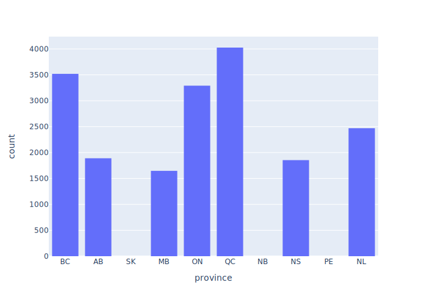

A model data analysis project in Python
results directorytasks.py:from pathlib import Path
from nitinat import plotting
RESULTS_DIR = "results"
PLOTS = {
"count_by_province": plotting.histogram_by_province
}
PLOT_TYPE = ".svg"
@task
def plot_data(c):
"""Create plots of data."""
for (stem, plot_func) in PLOTS.items():
result = Path(RESULTS_DIR, stem).with_suffix(PLOT_TYPE)
plot_func(CLEAN_FILE, str(result))
Path module for creating and manipulating file pathsplotting"""Create plots."""
import plotly.express as px
from .data import read_clean_data
def histogram_by_province(datafile, plotfile):
"""Create histogram of measurements by province."""
df = read_clean_data(datafile)
fig = px.histogram(df, x="province",
category_orders={"province": df["province"].cat.categories})
fig.write_image(plotfile)
inv plot-data